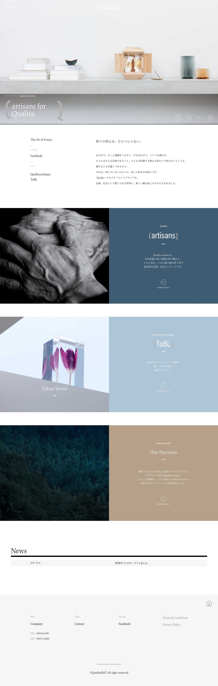
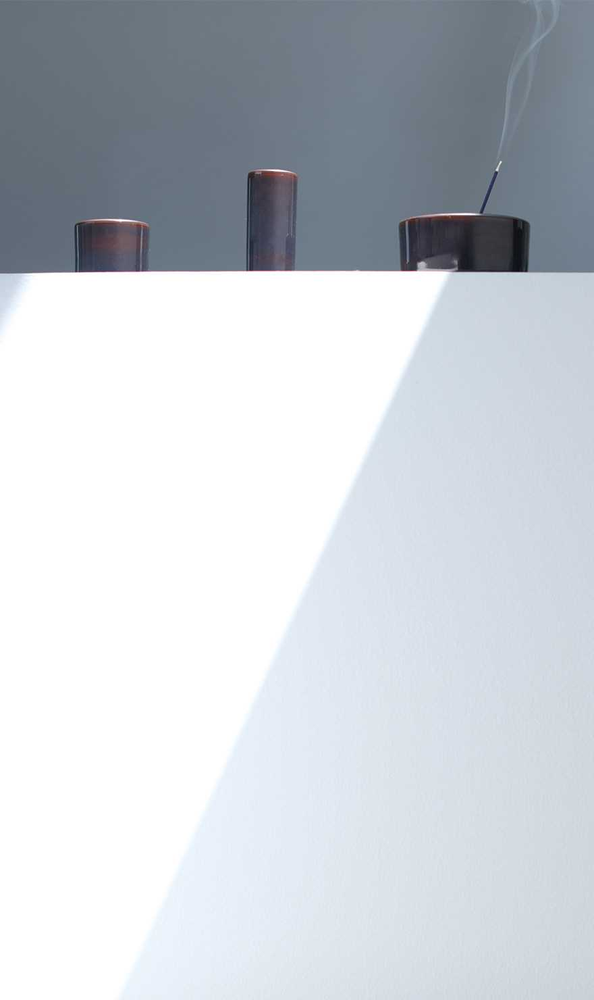
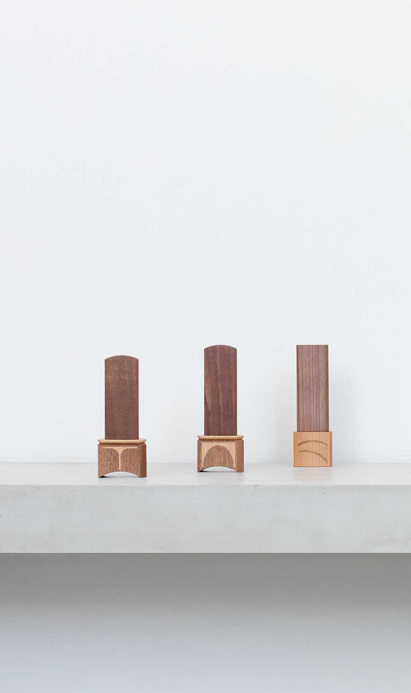
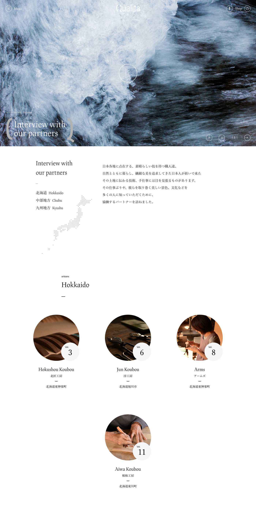
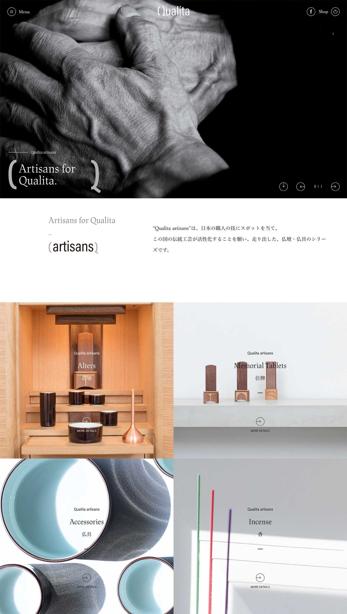
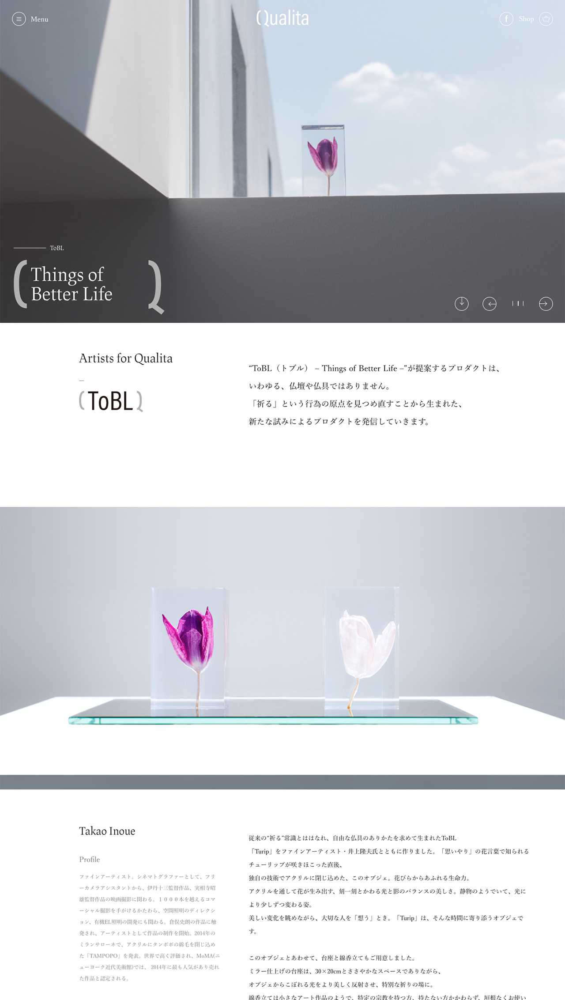
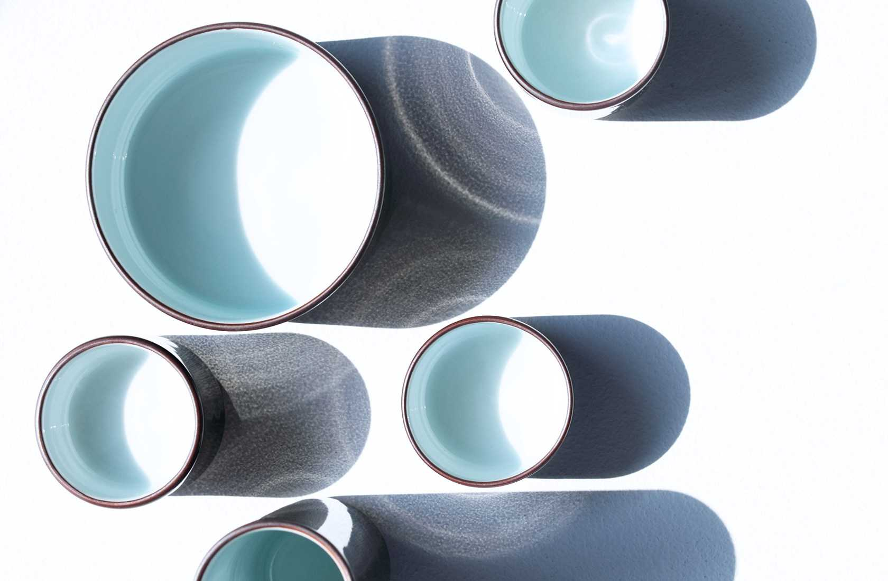
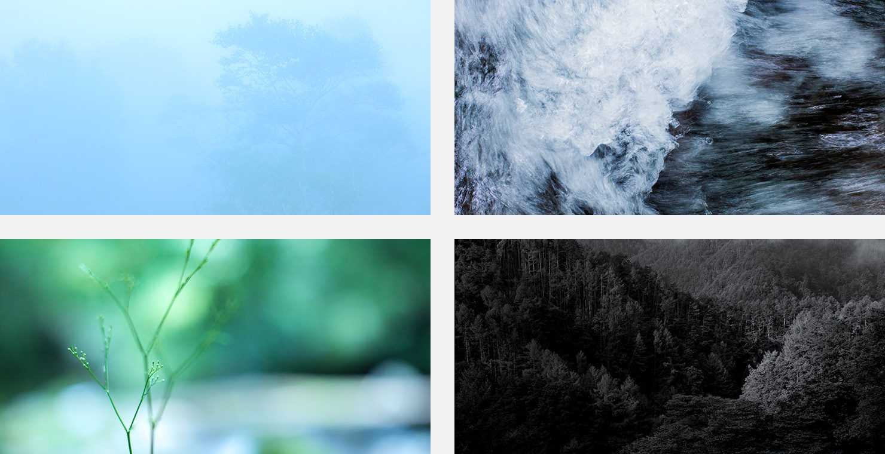

BACK
Cimet
Website for funeral equipment cimet that makes graceful alterations. Fast client-side renders, beautiful imagery, magazine interviews and everything in between.
Agency: NON-GRID.inc
Role: Development
Date: 2017
FOCUS 01
Bringing quiet to the digital
The first. The current one is too complicated and the navigation is messy, so what I focused on the most was making the overall interaction pleasant.



FOCUS 02
What's the Craftsmenship?
The first. The current one is too complicated and the navigation is messy, so what I focused on the most was making the overall interaction pleasant.

FOCUS 02
This brand has two categories
"cimet artisans" focuses on the techniques of Japanese craftsmen. ToBL is attempting to produce a new product by rethinking the original act of "prayer"


FOCUS 03
Point of development
"Utsu" one of Japan's virtues that matches quiet and refined scrolling action. The majestic photos help express the brands view of the world.

